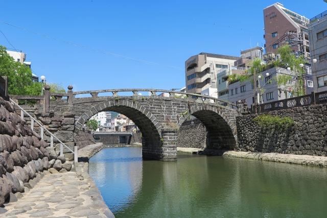
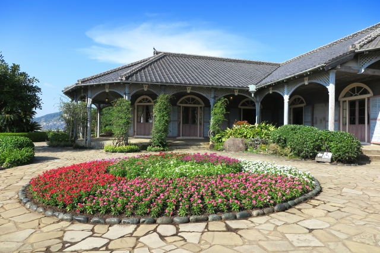

長崎市観光
時間: 14時〜19時
移動開始位置名: 松ヶ枝国際ターミナル
1つ目の場所: 長崎水辺の森公園
特徴: 心地よい潮風満ちる憩いのベイエリア
憩いの場として多くの人が利用しており、帆船まつりみなとまつりなど年間を通して様々なイベントが開催されています。
滞在時間:30分
2つ目の場所: 眼鏡橋
特徴: 日本三大名橋に数えられる現存最古のアーチ型石橋の一つ。国指定重要文化財
長崎市の中島川に架かる石造二連アーチ橋で、日本三大名橋のひとつです。橋の影が川面に映ると、眼鏡のように見えることからこの名前がついてます。1634年に興福寺の黙子如定禅師が架設したとされており、日本初の石造りアーチ橋だと言われています。
滞在時間:10分
3つ目の場所: オランダ坂
特徴: 外国人居留地の名残で異国情緒あふれる東山手エリアの石畳の坂道
石畳が敷かれた歴史的なオランダ坂は、異国情緒溢れる長崎の東山手地区にあり、美しい洋館に囲まれた風情ある坂道でございます。
滞在時間:5分
4つ目の場所: 長崎孔子廟 中国歴代博物館

特徴: 壮麗な伝統美を随所に凝らした日本で唯一の本格的中国様式の霊廟
江戸時代から続く歴史と唯一無二の中国様式が息づく長崎孔子廟で、中国の春秋時代の偉大な思想家の遺産に触れ、中国歴代博物館に展示されている貴重な宮廷文物や古代美術を堪能できます。
滞在時間:60分
5つ目の場所: 大浦天主堂

特徴: 世界の宗教史上に残る劇的な「信徒発見」の舞台
日本国内で最も古いゴシック様式の教会として、長崎の美しい洋風建築の象徴です。
キリシタン博物館としての役割も担い、その歴史の深さと美しさに触れることができます。
滞在時間:10分
6つ目の場所: グラバー園
特徴: 偉人たちも魅せられた長崎港の絶景を体感！
長崎港を一望できる南山手の丘にある、明治期の洋館群を展示する観光スポットです。世界遺産の構成資産である旧グラバー住宅をはじめ、国指定重要文化財の旧リンガー住宅や旧オルト住宅など、異国情緒あふれる建築物が見どころです。園内には花や緑が豊富で、石畳や石段にも歴史や文化の香りが漂います。
滞在時間:60分
到着:松ヶ枝国際ターミナル